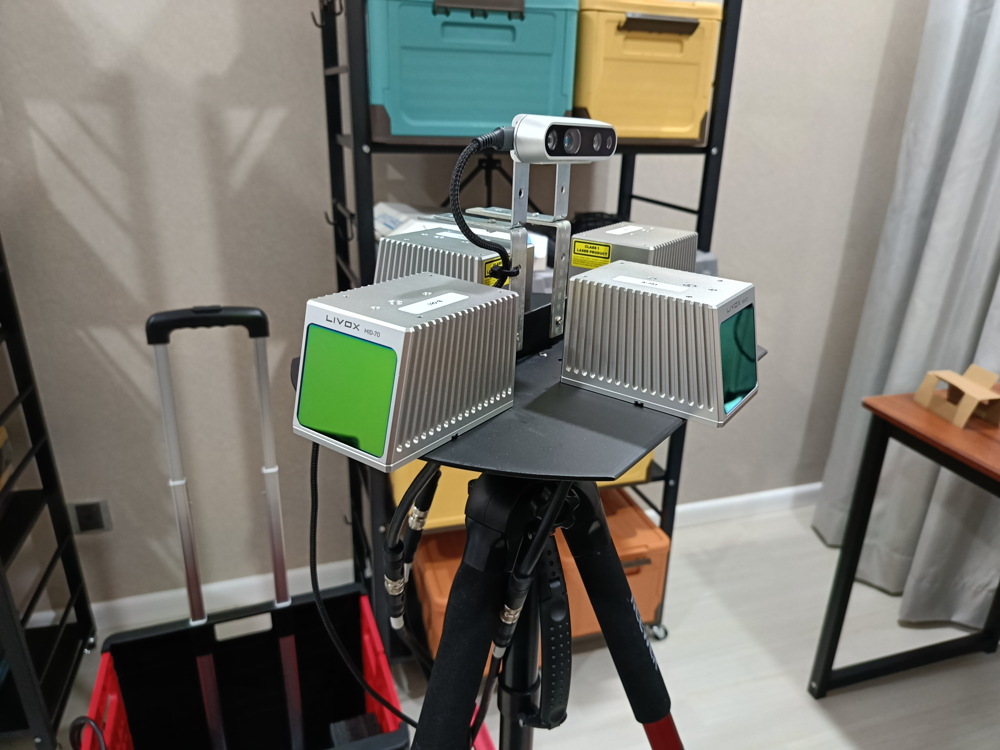
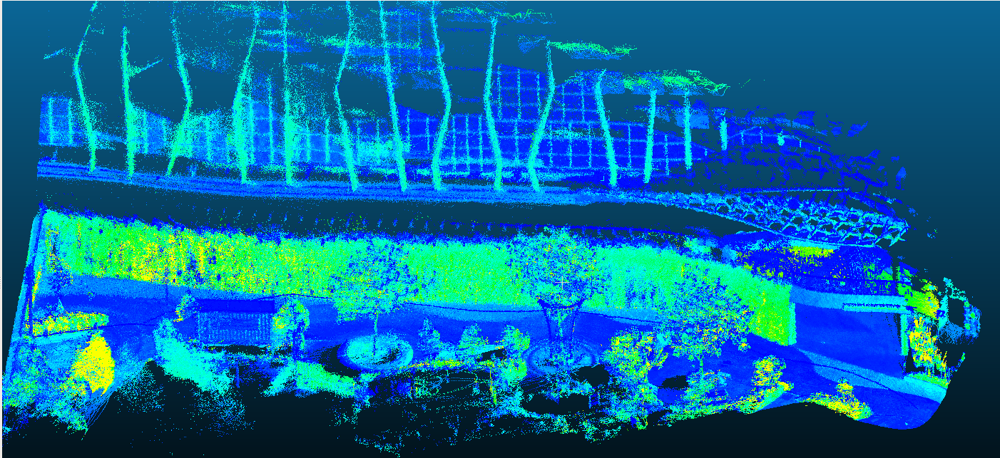

Outdoor mapping using 3d lidars and cameras

This details the work involved in producing an outdoor maps using slam pipelines.( loam and vision)

This details the work involved in producing an outdoor maps using slam pipelines.( loam and vision)


Above shows actual images of the outdoor area. A local network is created for the lidars and laptop so that live viewing of the map is possible as it builds.


Above shows the live view of the map created using the slam pipeline in rviz as well as the output 3d map finally generated.